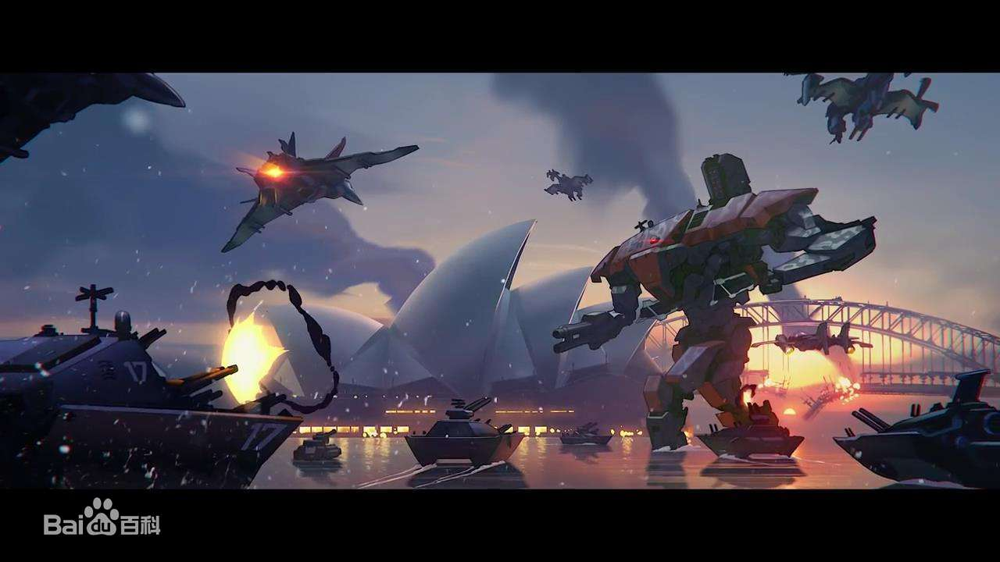
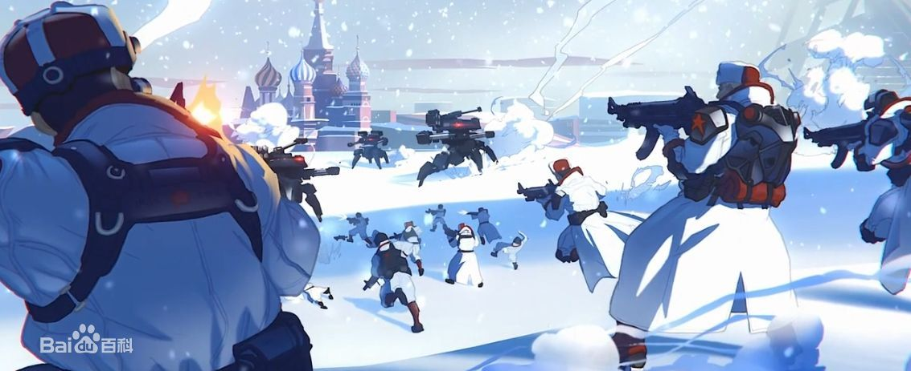
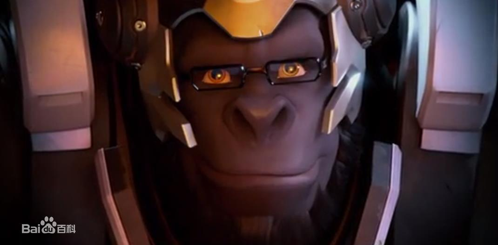

关于游戏
21世纪20年代初，人类设计了由人工智能创造的智能机械（简称为智械），其旨在加强生产和创造世界经济繁荣。然而，令人难以置信的事情发生了，智械变得充满恶意，并开始大量生产军用机器人试图毁灭人类。
各国政府未能阻止智能机械的进攻，因此联合国创建了一个国际维和组织，以反抗智能机械。汇集全世界最优秀最精英的组织被命名为“守望先锋”，其将围绕机器人军队展开一场实力不对称的战争。


智械危机持续了很多年，一种自适应海洋型机器人杀害了大量印度人民，肆虐澳大利亚，几近毁灭了西伯利亚和朝鲜半岛。但是尽管无比艰难，守望先锋也取得了一些胜利。
俄国人击败并且关闭了他们的智能中心，韩国派出了电竞职业选手们，包括世界冠军D.va，他们以新的机甲套装对抗海洋型机器人。危机造成两边的大量伤亡和损失，人类赢得了最终的胜利，这在很大程度上要归功于守望先锋。
2042年“佩特拉”法令宣布任何形式的守望先锋行为都是非法行动，并且会受到指控。守望先锋在智能危机结束20年后解散了。
守望先锋被解散后，在俄罗斯爆发了第二次智械危机，而以死神为首的“黑爪”组织追捕和杀害前守卫先锋成员和旨在维护人类与智能机械间和谐关系的人和机器人，黑爪侵入了温斯顿的基地，险些盗走关于前守望先锋成员的数据，在这种情况下，温斯顿不顾“佩特拉”法令而重新召集了守望先锋成员。

返回主页